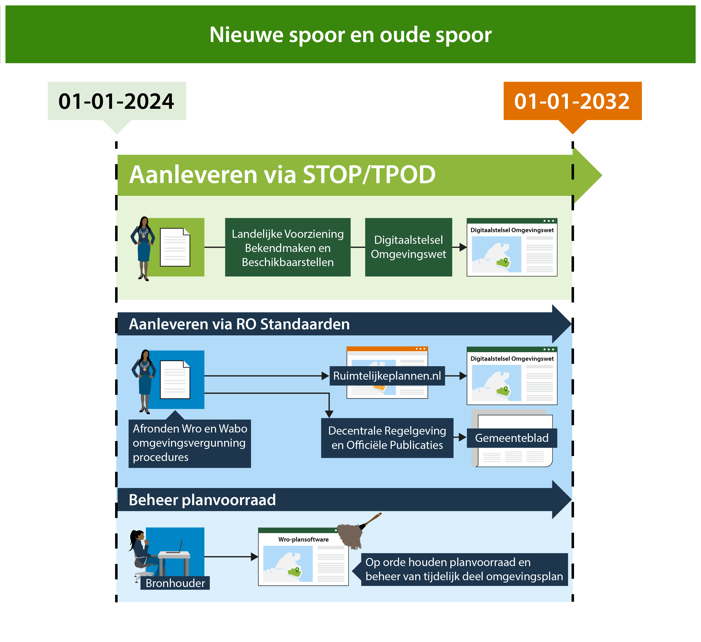
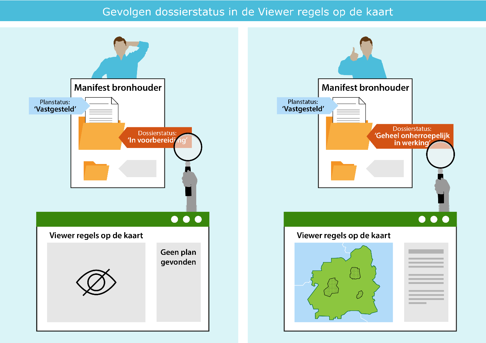
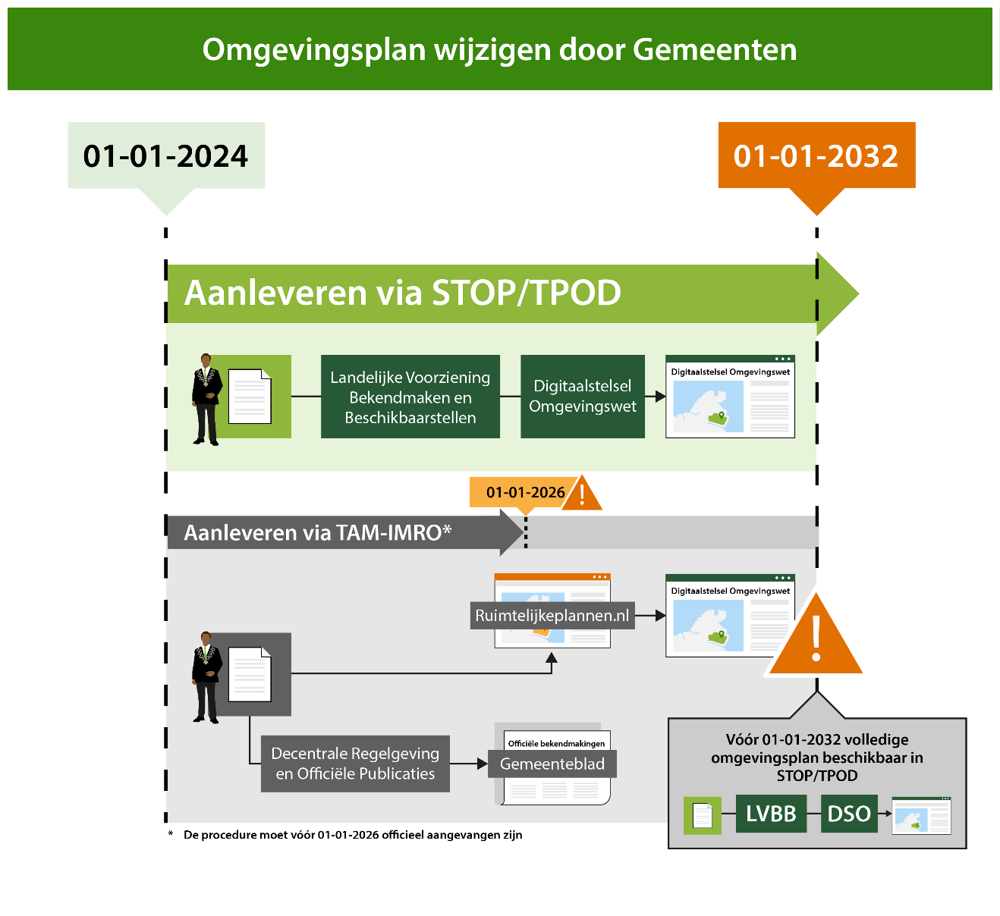

De Wro planvoorraad van gemeenten, provincies en het Rijk in Ruimtelijkeplannen.nl wordt sinds het inwerkingtreden van de Omgevingswet automatisch getoond in het Omgevingsloket samen met de nieuwe regels uit de omgevingsdocumenten. Voor de gebruiker van het Omgevingsloket kan er verwarring ontstaan als er meerdere versies van de regels beschikbaar zijn: welke regels gelden dan? Alleen het bevoegd gezag kan hierover duidelijkheid geven. Dit kan onder meer door het op orde houden van de Wro planvoorraad, ook onder de Omgevingswet. Dit kan alleen als de bronhouder met de eigen Wro-plansoftware, het manifestbeheer en de certificaten voor ondertekening tot 2032 behoudt en beheert. Deze handreiking is opgesteld voor gemeenten, en de organisaties die hen ondersteunen, die in de transitieperiode moeten werken met zowel Omgevingswet-software als Wro-plansoftware.
1.1 Nieuwe spoor en oude spoor
In de transitieperiode van 1 januari 2024 tot 1 januari 2032 hebben gemeenten de tijd om één omgevingsplan voor de gehele gemeente te vormen conform de TPOD-standaarden en de oude planvoorraad te verwijderen van Ruimtelijkeplannen.nl.
In deze periode worden ook lopende Wro-planprocedures afgerond. Op grond van de tijdelijke alternatieve maatregelen (TAM) kunnen tot en met 2025 voorbereidingsbesluiten en wijzigingsbesluiten op het omgevingsplan worden gemaakt en beschikbaar gesteld via het oude spoor: het met de Wro-plansoftware via Ruimtelijkeplannen.nl beschikbaar stellen en bekend maken via de Decentrale Regelgeving en Officiële Publicaties (DROP). De planvoorraad van Ruimtelijkeplannen.nl wordt automatisch ontsloten in het Omgevingsloket. In het Besluit elektronische publicaties, artikel 11 lid 1 onder 6 is geregeld dat uiterlijk tot 1 januari 2032 de landelijke voorziening Ruimtelijkeplannen.nl blijft functioneren.
Op grond van de Omgevingswet werken gemeenten steeds meer via het nieuwe spoor: met de Omgevingswet-software via de Landelijke Voorziening Bekendmaken en Beschikbaarstellen (LVBB) worden de regels ontsloten in het Omgevingsloket. Omgevingsvergunningen op basis van de Wabo en regels van onder andere de WRO en Wro vervallen wanneer de gemeente de regels opneemt in het wijzigingsbesluit op het omgevingsplan. De oude regels vervallen niet alleen juridisch maar moeten ook technisch komen te vervallen. Dat is een onderdeel van het werkproces van de gemeente. Het actualiseren van het omgevingsplan leidt namelijk niet automatisch tot het verwijderen van het vervallen bestemmingsplan uit de planvoorraad van Ruimtelijkeplannen.nl.
Alleen als gemeenten onder de Omgevingswet ook hun planvoorraad op Ruimtelijkeplannen.nl onderhouden zal het voor de gebruiker van het Omgevingsloket duidelijk kunnen worden welke regels geldend zijn. Een niet goed onderhouden planvoorraad op Ruimtelijkeplannen.nl zal zeker leiden tot onduidelijkheid over geldende regels bij de gebruiker van het Omgevingsloket.

Figuur 1Gelijktijdig werken in het het nieuwe spoor en het oude spoor.
1.2 Leeswijzer
Er is veel documentatie te vinden op de websites van IPLO, Geonovum en de VNG. Naast de documentatie over de RO Standaarden, TPOD-standaarden, waaronder de wegwijzer en juridische toelichting, is er ook Grip op de transitie van de planketen van de VNG.
Deze handreiking richt zich op gemeenten en het gebruik van het oude spoor: Ruimtelijke plannen op orde onder de Omgevingswetin de transitieperiode met behulp van de Wro-plansoftware.
Hoofdstuk 2 gaat in op het beheer van de planvoorraad in Ruimtelijkeplannen.nl. In de daaropvolgende hoofdstukken wordt per onderwerp een toelichting gegeven. Alle hoofdstukken sluiten af met korte samenvatting: waar moet op worden gelet? Er wordt zoveel mogelijk verwezen naar bestaande documentatie waarin een uitgebreidere toelichting op de werkwijze is beschreven.
De planvoorraad van gemeenten die beschikbaar is via Ruimtelijkeplannen.nl is ook onder de Omgevingswet aan verandering onderhevig. Gemeenten ronden lopende Wro procedures af, stellen rechtelijke uitspraken en kennisgevingen van omgevingsvergunningen beschikbaar en plaatsen een wijzigingsbesluit op het omgevingsplan op basis van TAM op Ruimtelijkeplannen.nl. Deze planvoorraad wordt automatisch getoond in het Omgevingsloket in samenhang met de nieuwe regels uit de omgevingsdocumenten.
Voor de gebruiker van het Omgevingsloket kan er verwarring ontstaan als er meerdere versies van de regels beschikbaar zijn: welke regels gelden? Alleen het bevoegd gezag kan daar duidelijkheid over geven. Naast meerdere versies van de regels komt het ook voor dat plannen niet of onjuist worden weergegeven in het Omgevingsloket als gevolg van technische fouten in de planvoorraad. Ook hier geldt dat het bevoegd gezag daarover duidelijkheid kan geven. Dit kan zij doen door de datakwaliteit van de planvoorraad op orde te houden:
door het blijven actualiseren van de planstatus en dossierstatus en
het opschonen en afbouwen van de planvoorraad.

Figuur 2Gevolgen bij een onjuiste dossierstatus/ planstatus
De planstatus en dossierstatussen moeten worden aangepast door de gemeente. Voor geheel onherroepelijke bestemmingsplannen geldt dat concept-, voorontwerp- en ontwerpbestemmingsplan versies door de gemeente moeten worden verwijderd uit de planvoorraad. Dit proces van actualiseren en opruimen van de planvoorraad met behulp van de Wro-plansoftware doet de gemeente zolang zij nog plannen beschikbaar stelt op Ruimtelijkeplannen.nl. Uiterlijk eind 2031 dient de volledige gemeentelijke planvoorraad van Ruimtelijkeplannen.nl te zijn verwijderd. Het is dus van belang dat de gemeente blijft beschikken over Wro-plansoftware om de plannen te beheren en de daarbij behorende certificaten om de besluiten te ondertekenen.
Consistent gebruik planstatus en dossierstatus
Via het manifest van de bronhouder wordt de planvoorraad van de gemeente beschikbaar gesteld op Ruimtelijkeplannen.nl. In het manifest is ordening aangebracht met behulp van dossiers. In een dossier zijn één of meerdere ruimtelijke plannen opgenomen behorende bij dezelfde procedure. Ieder plan heeft een ‘planstatus’, daarnaast heeft het dossier waarin het plan zich bevindt een zogenaamde ‘dossierstatus’. Op basis van deze dossierstatus wordt bepaald in welke fase van de procedure een plan zich bevindt zoals bijvoorbeeld: ‘in voorbereiding’, ‘vastgesteld’ of ‘geheel onherroepelijk in werking’.
De dossierstatus moet passend zijn met de status van het plan in het dossier. Voorbeeld: bevat een dossier uitsluitend een plan met de planstatus ‘concept’, ‘voorontwerp’ of ‘ontwerp’ dan is de dossierstatus ‘in voorbereiding’. Wijzigt de status van het plan in ‘vastgesteld’ dan zal door de bronhouder ook de status van het dossier moeten worden aangepast, eerst in ‘vastgesteld’, en vervolgens afhankelijk van het verloop van de procedure naar een volgende status. Rechtelijk uitspraken hebben ook invloed op de dossierstatus, maar dit verschilt per type ruimtelijk plan.
Opschonen en afbouwen van de planvoorraad
Op het moment dat een ruimtelijk plan ‘geheel onherroepelijk in werking’ treed, dient de dossierstatus voor dat plan in het manifest door de gemeente aangepast te worden naar ‘geheel onherroepelijk in werking’. Op dat moment worden bij voorkeur ook alle voorgaande versies van dat plan (concept, voorontwerp, ontwerp) uit het dossier verwijdert. Blijven deze versies in de planvoorraad staan, dan kan er bij de gebruiker van het Omgevingsloket verwarring ontstaan welke regels geldend zijn.
Plannen worden niet automatisch uit de planvoorraad van Ruimtelijkeplannen.nl verwijderd: met de pons-functie in het Omgevingsloket worden plannen verborgen maar niet verwijderd. De gemeente moet zelf het betreffende plan met behulp van de Wro-plansoftware uit het manifest van Ruimtelijkeplanen.nl verwijderen. Verwijder het dossier en de onderliggende planversies en gebruik niet de dossierstatus ‘vervallen’. Een plan met de dossierstatus ‘vervallen’ is niet meer zichtbaar in de viewer van Ruimtelijkeplannen.nl, maar het plan is nog wel zichtbaar in het Omgevingsloket.
Bestemmingsplannen, omgevingsvergunningen, plancontour en PDF-plannen, maar ook Crisis- en herstelwet plannen maken onderdeel uit van de gemeentelijke planvoorraad die is aangemerkt als het tijdelijk deel van het omgevingsplan. Gemeenten stellen deze plannen beschikbaar met behulp van de Wro-plansoftware via 2 soorten manifesten:
een STRI2006 manifest en
een STRI2008/2012 manifest.
Alle gemeenten hebben een STRI2008/2012 manifest en een groot aantal heeft ook een STRI2006 manifest. In de transitieperiode tot 1 januari 2032 moeten gemeenten deze manifesten te beheren en actueel te houden.
Samengevat:
Verwarring, bij de gebruiker van het Omgevingsloket, over welke regels gelden kan worden voorkomen als de gemeente:
de planstatus en dossierstatus van de planvoorraad consequent actualiseert en blijft actualiseren, en
de planvoorraad opschoont en afbouwt door oude regels te verwijderen uit het gemeentelijke manifest en daardoor van Ruimtelijkeplannen.nl.
Gebruik voor het aanpassen van de dossierstatus het overzicht van dossierstatus met overgangen voor de juiste status en houdt in de gaten welke dossierstatus moet worden toegepast bij de rechterlijke uitspraak.
Maak geen gebruik van de dossierstatus ‘vervallen’ maar verwijder het dossier en de onderliggende planversies in dat dossier uit het manifest met behulp van de Wro-plansoftware. Dossiers die al de dossierstatus ‘vervallen’ hebben kunnen meteen worden verwijderd.
Is onduidelijk of er een 2006 manifest is, of welke plannen nog via Ruimtelijkeplannen.nl beschikbaar zijn?
klik op de link van de manifest locatie om te zien welke plannen in het manifest zijn opgenomen.
3. Omgevingsvisies
Iedere gemeente moet op grond van de Omgevingswet uiterlijk op 1 januari 2027 een omgevingsvisie hebben. Deze datum is bij Koninklijk Besluit op grond van artikel 4.9, lid 1 Invoeringswet Omgevingswet bepaald. Dit houdt in dat gemeentelijke structuurvisies op basis van voormalige wet- en regelgeving uiterlijk op 1 januari 2027 komen te vervallen. Technisch gezien worden de Wro structuurvisies niet automatisch uit de landelijke voorziening Ruimtelijkeplannen.nl gehaald: de gemeente dient een dergelijke structuurvisie zelf, uiterlijk op 31 december 2026, te verwijderen uit het gemeentelijke manifest van Ruimtelijkeplannen.nl.
Het is voorafgaand aan de invoering van de Omgevingswet enkele jaren mogelijk geweest om op basis van de RO standaarden met de Wro-plansoftware een omgevingsvisie te maken die aan de regels van de Omgevingswet voldoet. Voor een dergelijke omgevingsvisie, die technisch is gemaakt op basis van het plantype structuurvisie van de RO standaarden en die voldoet aan de juridische Omgevingswet vereisten, is de datum van 1 januari 2027 niet van toepassing. De gemeente dient zelf te beoordelen óf die omgevingsvisie voldoet aan de vereisten van de Omgevingswet en óf het verwijderen van de visie van Ruimtelijkeplannen.nl op uiterlijk 31 december 2031 noodzakelijk is.
In het Besluit elektronische publicaties, artikel 11 lid 1 onder 6 is geregeld dat uiterlijk tot 1 januari 2032 de landelijke voorziening Ruimtelijkeplannen.nl blijft functioneren. Uiterlijk op die datum dienen alle gemeentelijke omgevingsvisies, die op basis van de RO standaarden zijn gemaakt met behulp van de Wro-plansoftware, te zijn verwijderd van de landelijke voorziening Ruimtelijkeplannen.nl en vervangen te zijn door een op de TPOD-standaarden gebaseerde actuele omgevingsvisie die gepubliceerd is via de Landelijke Voorziening Bekendmaken en Beschikbaarstellen (LVBB).
Samengevat:
Heeft de gemeente een omgevingsvisie op Ruimtelijkeplannen.nl staan?
zoek in de viewer van Ruimtelijkeplannen.nl onder ‘Zoek op kenmerken’, vul bij ‘eigenaar’ de naam van de bronhouder in en kies voor het ‘plantype’ structuurvisie om dit te controleren.
Voldoet deze omgevingsvisie aan de vereisten van de Omgevingswet?
Uiterlijk 1 januari 2027 heeft de gemeente een omgevingsvisie die voldoet aan de vereisten van de Omgevingswet en bij voorkeur conform de TPOD-standaarden.
Een omgevingsvisie opgesteld via de Wro-plansoftware is uiterlijk eind 2031:
door de gemeente vervangen door een omgevingsvisie conform de TPOD-standaarden;
door de gemeente uit het manifest en daardoor van Ruimtelijkeplannen.nl verwijderd.
4. Tijdelijk deel omgevingsplan
Met het inwerkingtreden van de Omgevingswet zijn onder andere de bestemmingsplannen van gemeenten onderdeel geworden van het tijdelijk deel van het omgevingsplan. Deze plannen blijven geldig totdat zij uiterlijk 1 januari 2032 zijn vervangen door middel van een wijzigingsbesluit op het omgevingsplan conform de TPOD-standaarden. De digitale ruimtelijke plannen van het tijdelijk deel van het omgevingsplan staan op de landelijke voorziening van Ruimtelijkeplannen.nl.
Het tijdelijk deel van het omgevingsplan is ook onder de Omgevingswet aan verandering onderhevig. Gemeenten ronden lopende Wro procedures af, al dan niet met gerechtelijke uitspraken. Deze planvoorraad moet nog altijd door de gemeente worden beheerd: actualiseren van de planstatussen en dossierstatussen en het opschonen van de planvoorraad.
De ruimtelijke plannen in de landelijke voorziening Ruimtelijkeplannen.nl worden automatisch en in samenhang met de Omgevingswet instrumenten ontsloten in het Omgevingsloket. Wanneer ruimtelijke plannen zoals bestemmingsplannen en omgevingsvergunningen door de gemeente worden verwerkt in het omgevingsplan dienen ze door de gemeente verwijderd te worden uit de planvoorraad van Ruimtelijkeplannen.nl. Dit gaat niet automatisch.
De ruimtelijke plannen blijven zichtbaar en vindbaar via Regels op de kaart van het Omgevingsloket zolang de bronhouder deze plannen niet zelf, handmatig verwijderd uit het manifest en daarmee van Ruimtelijkeplannen.nl. Niet verwijderde plannen kunnen bij de gebruiker van het Omgevingsloket voor verwarring zorgen omdat zowel het oude ruimtelijke plan als ook het nieuwe omgevingsplanbesluit als geldig worden getoond.
Gebiedsgericht wijzigen van het omgevingsplan biedt de mogelijkheid om oude bestemmingsplan regelingen in zijn geheel in één keer te laten vervallen. Hierbij is het noodzakelijk dat de begrenzing van het wijzigingsbesluit op het omgevingplan overeenkomt met de plangrens van het oude bestemmingsplan. In het geval voor deze werkwijze wordt gekozen kan na de wijziging van dit deel van het omgevingsplan, het bestemmingsplan worden verwijderd uit het gemeentelijke manifest en daarmee van Ruimtelijkeplannen.nl.
Mocht, bijvoorbeeld bij een concrete beperkte gebiedsontwikkeling, de gebiedsgerichte wijziging van het omgevingsplan kleiner zijn dan het onderliggende bestemmingsplan, dan kan de gemeente ook besluiten om voor dat deel waarvoor de wijziging wordt doorgevoerd, gebruik te maken van de “Pons”. De Pons zorgt ervoor dat de viewer Regels op de kaart na een klik binnen het ponsgebied alleen het STOP/TPOD-deel van het omgevingsplan en, indien aanwezig, TAM-IMRO omgevingsplan en/of TAM-IMRO voorbereidingsbesluit als resultaat in de documentenlijst teruggeeft. Op locaties buiten het ponsgebied blijven wel de daar geldende regels uit het STOP/TPOD-deel van het omgevingsplan en de regels uit de ruimtelijke plannen zichtbaar.
Themagericht wijzigen van het omgevingsplan leidt ertoe dat de gemeente door middel van een wijzigingsbesluit een gedeelte van bijvoorbeeld een bestemmingsplan, dat onderdeel uitmaakt van het tijdelijk deel van het omgevingsplan, opneemt in het permanente deel van het omgevingsplan. Het bestemmingsplan komt daardoor nog niet te vervallen: immers de andere regels in dat bestemmingsplan blijven gelden. Het bestemmingsplan moet beschikbaar blijven via Ruimtelijkeplannen.nl totdat het gehele bestemmingsplan is verwerkt in het omgevingsplan conform de TPOD-standaarden. Pas op dat moment verwijdert de gemeente het oude bestemmingsplan uit het gemeentelijke manifest waardoor het van Ruimtelijkeplannen.nl wordt verwijderd. Uiterlijk eind 2031 dient de volledige gemeentelijke planvoorraad van Ruimtelijkeplannen.nl verwijderd te zijn. Lees hierover meer in het hoofdstuk over het beheer van de planvoorraad op Ruimtelijkeplannen.nl.
Samengevat:
Het tijdelijk deel van het omgevingsplan blijft aan verandering onderhevig; het beheer daarvan door de gemeente blijft nodig; zie beheer van de planvoorraad.
Voor het uitvoeren van het beheer van de ruimtelijke plannen is het belangrijk dat de gemeente haar Wro-plansoftware tot 1 januari 2032 behoud en beschikt over geldende certificaten voor ondertekening.
De regels van de ruimtelijke plannen vervallen juridisch wanneer zij met het wijzigingsbesluit op het omgevingsplan zijn verwerkt. Technisch vervallen de oude digitale ruimtelijke plannen niet automatisch:
de gemeente verwijdert zelf via de Wro-plansoftware de oude plannen uit het manifest en daardoor van Ruimtelijkeplannen.nl.
Wordt een bestemmingsplan door middel van ‘gebiedsgericht wijzigen’ van het omgevingsplan in zijn geheel verwerkt dan
verwijdert de gemeente het bestemmingsplan uit het manifest op het moment de wijziging onherroepelijk is waardoor het van Ruimtelijkeplannen.nl wordt verwijderd.
Met ‘thematisch gericht wijzigen’ van het omgevingsplan moet de gemeente uiterlijk eind 2031:
alle ruimtelijke plannen in het omgevingsplan hebben verwerkt en
hebben verwijderd uit het manifest waardoor de gehele gemeentelijke planvoorraad van Ruimtelijkeplannen.nl is verwijderd.
5. Omgevingsvergunningen
In het kader van overgangsrecht Wabo lopen bij gemeenten nog veel procedures op grond van artikel 2.12, eerste lid, onderdeel a, onder 3 van de Wabo. De kennisgeving van de verleende omgevingsvergunning wordt via DROP beschikbaar gesteld op officielebekendmakingen.nl en de planbestanden worden door de gemeente op basis van de RO Standaarden met de Wro-plansoftware beschikbaar gesteld via Ruimtelijkeplannen.nl. De omgevingsvergunning om af te wijken van een bestemmingsplan wordt automatisch ontsloten en in samenhang met de Omgevingswet instrumenten getoond in het Omgevingsloket.
Omgevingsvergunningen die op Ruimtelijkeplannen.nl staan moeten door de gemeente uiterlijk eind 2031 in het permanente deel van het omgevingsplan zijn verwerkt en met behulp van de Wro-plansoftware zijn verwijderd uit het gemeentelijke manifest en daarmee van de landelijke voorziening Ruimtelijkeplannen.nl. Omgevingsvergunningen die al eerder verwerkt zijn in bijvoorbeeld een bestemmingsplan kunnen zondermeer van ruimtelijkeplannen.nl worden verwijderd.
Samengevat:
Heeft de gemeente verleende omgevingsvergunningen op Ruimtelijkeplannen.nl staan?
zoek in de viewer van Ruimtelijkeplannen.nl onder ‘Zoek op kenmerken’ op ‘eigenaar’ en op ‘plantype’ omgevingsvergunning om dit te controleren.
De controle kan ook worden gedaan met behulp van de Wro-plansoftware en het gemeentelijke manifest.
De regels van al deze vergunningen moeten uiterlijk eind 2031:
door de gemeente opgenomen zijn in het permanente deel van het omgevingplan op basis van de TPOD-standaarden;
de gemeente verwijdert deze omgevingsvergunningen via de Wro-plansoftware uit het gemeentelijke manifest en daardoor van Ruimtelijkeplannen.nl.
6. TAM voorbereidingsbesluit
Door gemeenten is in de eerste periode na het inwerkingtreden van de Omgevingswet gebruik gemaakt van de mogelijkheid een voorbereidingsbesluit te nemen en deze te publiceren met gebruikmaking van de werkafspraak TAM-voorbereidingsbesluit en de Wro-plansoftware. Juridisch gezien moet dit voorbereidingsbesluit voldoen aan de Omgevingswet. Technisch wordt dit voorbereidingsbesluit via het oude spoor in Ruimtelijkeplannen.nl beschikbaar gesteld en vervolgens automatisch ontsloten in het Omgevingsloket.
Het is tot 1 januari 2026 mogelijk om op basis van artikel 11 lid 1 van het Besluit elektronische publicaties, met behulp van de RO Standaarden, de landelijke voorziening Ruimtelijkplannen.nl en DROP een voorbereidingsbesluit op basis van TAM te publiceren. Voor het maken van een dergelijk TAM-voorbereidingsbesluit wordt onder strikte voorwaarden gebruik gemaakt van de Wro planfiguur ‘voorbereidingsbesluit’ conform de RO Standaarden 2012. De naam van het wijzigingsbesluit moet op de volgende manier zijn geschreven: TAM-voorbereidingsbesluit [spatie][plannaam]
De werkwijze voor het maken van een TAM-voorbereidingsbesluit met behulp van de Wro-plansoftware is vastgelegd in een werkafspraak en toegelicht in de VNG Bijsluiter.
In de transitieperiode tot 1 januari 2032 neemt de gemeente op basis van het voorbereidingsbesluit het initiatief om het omgevingsplan te wijzigen. In de Omgevingswet is geregeld wanneer een voorbereidingsbesluit komt te vervallen. Op dat moment moet de gemeente het TAM-voorbereidingsbesluit verwijderen uit het gemeentelijke manifest en daarmee van de landelijke voorziening Ruimtelijkeplannen.nl. Het voorbereidingsbesluit is immers niet meer van toepassing en de aanwezigheid ervan kan voor de gebruiker van het Omgevingsloket tot verwarring leiden.
Samengevat:
Heeft de gemeente TAM-voorbereidingsbesluiten op Ruimtelijkeplannen.nl staan?
op ‘plantype’ voorbereidingsbesluit om dit te controleren.
Is een voorbereidingsbesluit door middel van wijzigingsbesluit op het omgevingsplan in zijn geheel verwerkt of is het van rechtswege vervallen dan
verwijdert de gemeente het TAM-voorbereidingsbesluit uit het gemeentelijke manifest waardoor het van Ruimtelijkeplannen.nl wordt verwijderd.
7. TAM omgevingsplan
Sinds het inwerkingtreden van de Omgevingswet zijn door gemeente zijn ook wijzigingsbesluiten op het omgevingsplan genomen met behulp van de tijdelijke alternatieve maatregelen. Het omgevingsplan moet juridisch voldoen aan de Omgevingswet. Technisch gezien worden deze wijzigingsbesluiten op het omgevingsplan via het oude spoor in Ruimtelijkeplannen.nl beschikbaar gesteld en vervolgens automatisch ontsloten in het Omgevingsloket.

Figuur 3Omgevingsplan conform TPOD-standaarden of TAM
Het is tot 1 januari 2026 mogelijk om op basis van artikel 11 lid 1 van het Besluit elektronische publicaties, met behulp van de RO Standaarden, de landelijke voorziening Ruimtelijkplannen.nl en DROP een ontwerp omgevingsplan wijziging op basis van TAM te publiceren. Voor het maken van een dergelijk TAM-omgevingsplan wordt onder strikte voorwaarden gebruik gemaakt van de Wro planfiguur ‘bestemmingsplan’ conform de RO Standaarden 2012. De naam van het wijzigingsbesluit moet op de volgende manier zijn geschreven: TAM-omgevingsplan[spatie][plannaam]
De werkwijze voor het maken van een TAM-omgevingsplan met behulp van de Wro-plansoftware is vastgelegd in een werkafspraak en een technische handreiking.
Het TAM-omgevingsplan moet door de gemeente voor 1 januari 2032 technisch onderdeel worden van het omgevingsplan conform de TPOD-standaarden. Ook moet het TAM-omgevingsplan voor die datum zijn verwijderd van Ruimtelijkeplannen.nl.
Samengevat:
Heeft de gemeente TAM-omgevingsplannen op Ruimtelijkeplannen.nl staan?
zoek in de viewer van Ruimtelijkeplannen.nl onder ‘Zoek op plannaam of -nummer’ en type TAM in,
bij ‘Zoek op kenmerken’ op ‘eigenaar’ en
op ‘plantype’ bestemmingsplan om dit te controleren.
Uiterlijk eind 2031 heeft de gemeente een omgevingsplan dat voldoet aan de vereisten van de Omgevingswet en dat is opgesteld en beschikbaar gesteld conform de TPOD-standaarden.
Alle TAM-omgevingsplannen die ontsloten zijn met behulp van de Wro-plansoftware zijn uiterlijk eind 2031:
door de gemeente conform de TPOD-standaarden opgenomen in het niet-tijdelijk deel van het omgevingsplan;
door de gemeente uit het gemeentelijke manifest en daardoor van Ruimtelijkeplannen.nl verwijderd.
8. Archiveren ruimtelijke plannen
Onder de Wet ruimtelijke ordening waren de digitale ruimtelijke plannen de authentieke plannen. Dit betekent dat een samenhangende set bronbestanden (dataset genoemd) conform de RO Standaarden door gemeenten, provincies en het Rijk geproduceerd, beschikbaar gesteld, vindbaar en toegankelijk gemaakt werd. Dit deden zij voor de ruimtelijke plannen genoemd in artikel 1.2.1 van het Besluit ruimtelijke ordening.
De samenhangende set bronbestanden is naast alle analoge en digitale stukken, zoals de ondergrond, één van de onderdelen in de planprocedure. De bestuursorganen zijn tevens verplicht conform de Archiefwet de ruimtelijke plannen te archiveren met als doel de plannen in goede, geordende en toegankelijke staat te brengen en daarmee duurzaam toegankelijk te houden, ook na inwerkingtreden van de Omgevingswet. Dit regelt het bestuursorgaan, namens de gemeente is het College van Burgemeester en Wethouders zorgdrager, in de eigen organisatie. De landelijke voorziening Ruimtelijkeplannen.nl heeft geen archieffunctie en kan hier door niet voor worden ingezet.
In het Besluit elektronische publicaties, artikel 11 lid 1 onder 6 is geregeld dat uiterlijk tot 1 januari 2032 de landelijke voorziening Ruimtelijkeplannen.nl blijft functioneren. In deze overgangsperiode beheert de gemeente de planvoorraad met behulp van de Wro-plansoftware en zorgt dat uiterlijk eind 2031 de planvoorraad van Ruimtelijkeplannen.nl is verwijderd.
Samengevat:
De gemeente is, conform de Archiefwet, verplicht de digitale ruimtelijke plannen te archiveren met als doel de plannen in goede, geordende en toegankelijke staat te brengen en daarmee duurzaam toegankelijk te houden, ook na inwerkingtreden van de Omgevingswet.
De landelijke voorziening Ruimtelijkeplannen.nl heeft geen archieffunctie en kan hier door niet voor worden ingezet.